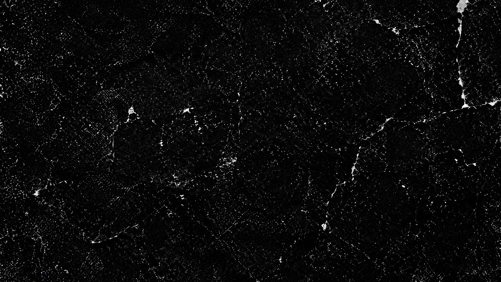
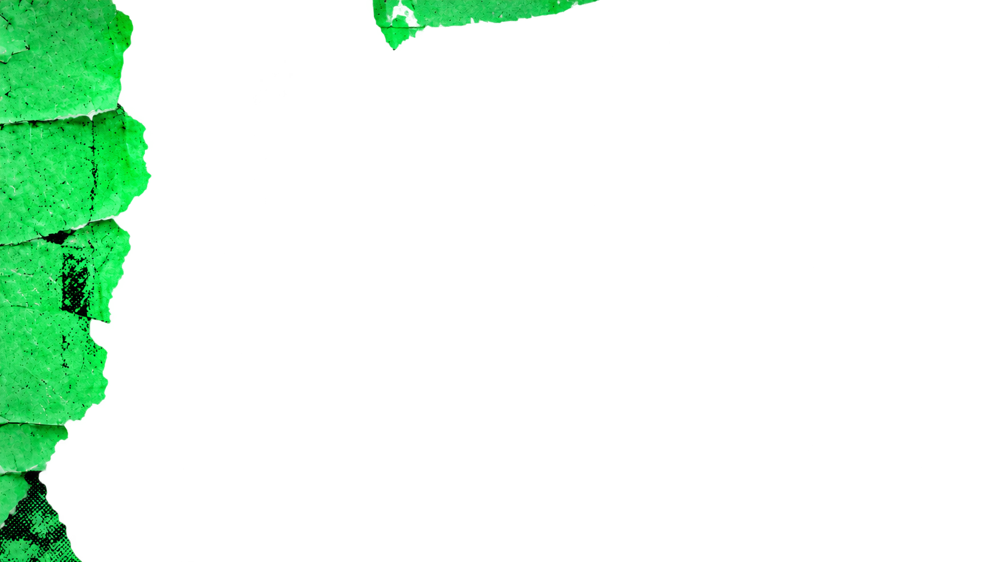

<!doctype html>
<html lang="en">
<meta charset="utf-8">
<meta name="viewport" content="width=device-width,initial-scale=1">
<title>Torn poster parallax</title>
<style>
*{box-sizing:border-box}body{margin:0;background:#080808;color:#ddd;font:14px system-ui}main{min-height:100svh;display:grid;place-content:center;gap:20px;padding:24px}.wall{position:relative;width:min(1200px,calc(100vw - 48px));aspect-ratio:1672/941;overflow:hidden;background:#080808}.wall img{position:absolute;inset:-4%;width:108%;height:108%;object-fit:fill;pointer-events:none;will-change:transform}footer{display:flex;align-items:center;gap:16px;flex-wrap:wrap}button{background:#222;color:white;border:1px solid #666;border-radius:5px;padding:9px 14px;cursor:pointer}p{margin:0}@media(prefers-reduced-motion:reduce){.wall img{will-change:auto}}
</style>
<main>
<div class="wall" role="img" aria-label="Green, black and gray layered torn poster wall">




</div>
<footer><p>Move your pointer across the wall.</p><button type="button" id="motion" aria-pressed="true">Pause motion</button></footer>
</main>
<script>
const wall=document.querySelector('.wall'),layers=[...wall.querySelectorAll('img')],button=document.querySelector('#motion'),reduce=matchMedia('(prefers-reduced-motion: reduce)');
let enabled=!reduce.matches,targetX=0,targetY=0,x=0,y=0,frame=0;
function draw(){frame=0;x+=(targetX-x)*.09;y+=(targetY-y)*.09;const size=wall.getBoundingClientRect();for(const layer of layers){const d=Number(layer.dataset.depth);layer.style.transform=`translate(${x*size.width*d}px,${y*size.height*d}px)`}if(Math.abs(targetX-x)+Math.abs(targetY-y)>.001)frame=requestAnimationFrame(draw)}
function schedule(){if(!frame)frame=requestAnimationFrame(draw)}
function reset(){targetX=targetY=0;schedule()}
function sync(){button.textContent=enabled?'Pause motion':'Enable motion';button.setAttribute('aria-pressed',String(enabled));if(!enabled)reset()}
wall.addEventListener('pointermove',event=>{if(!enabled)return;const rect=wall.getBoundingClientRect();targetX=(event.clientX-rect.left)/rect.width*2-1;targetY=(event.clientY-rect.top)/rect.height*2-1;schedule()});
wall.addEventListener('pointerleave',reset);button.addEventListener('click',()=>{enabled=!enabled;sync()});reduce.addEventListener('change',()=>{enabled=!reduce.matches;sync()});addEventListener('resize',schedule);sync();
</script>
</html>
